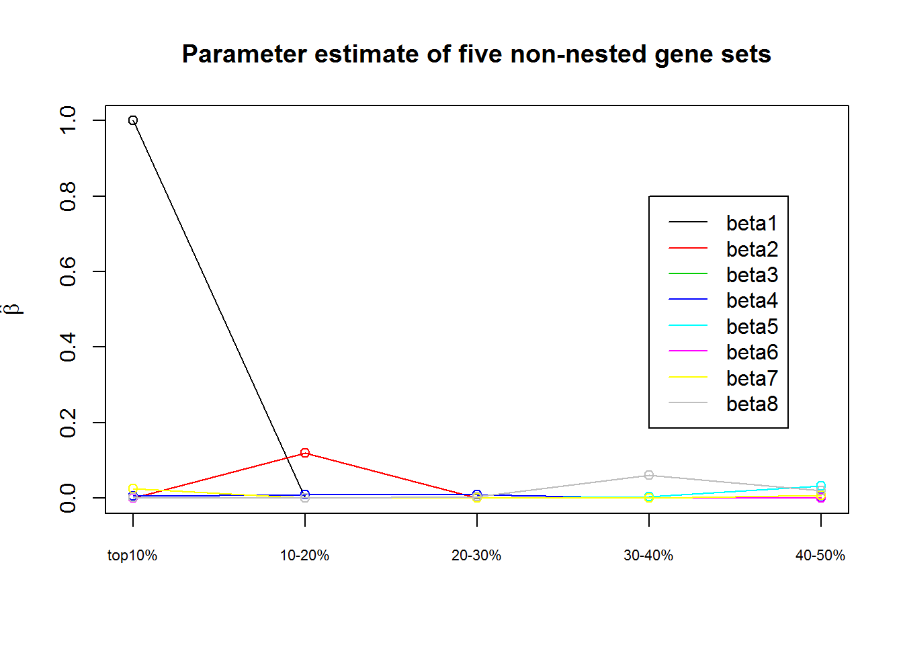

Last updated: 2017-10-24
Code version: 5e9f686
N1=2536; N0=2543
All.Anno.Data[All.Anno.Data =="."] <- NA
All.Anno.Data$ExacAF[is.na(All.Anno.Data$ExacAF)]=0 # set AF of NA to zero
Anno.Data=All.Anno.Data[which(All.Anno.Data$ExacAF<0.05 & All.Anno.Data$Annotation!="synonymous SNV"),] # use AF cutoff and exclude synonumous SNV
var.data=data.frame(ID=Anno.Data$ID, No.case=Anno.Data$No.case, No.contr=Anno.Data$No.contr)
LoF.def=c("stopgain", "frameshift substitution", "splicing", "stoploss")
LoF.var=as.character(Anno.Data$ID[which(Anno.Data$Annotation %in% LoF.def==T)]) | OR | p.value | rate.ca | rate.co | |
|---|---|---|---|---|
| cate1 | 1.0695491 | 0.0585134 | 0.4546530 | 0.4250885 |
| cate2 | 0.9985422 | 0.5292488 | 1.4002366 | 1.4022808 |
| cate3 | 1.0266947 | 0.0331565 | 3.9073344 | 3.8057413 |
| cate4 | 0.9844201 | 0.9638093 | 10.1805994 | 10.3417224 |
| cate5 | 0.9875734 | 0.7719781 | 2.7180599 | 2.7522611 |
| cate6 | 1.0364296 | 0.2608020 | 0.2791798 | 0.2693669 |
| cateS | 1.0388224 | 0.0122912 | 2.8170347 | 2.7117578 |
| TADAq<5% | 1.0439491 | 0.0574849 | 1.0993691 | 1.0530869 |
| TADAq<20% | 1.0136952 | 0.2008975 | 3.0705836 | 3.0290995 |
| TADAq<30% | 1.0157384 | 0.1059530 | 5.1230284 | 5.0436492 |
| TADAq<40% | 1.0097134 | 0.1674085 | 7.9593849 | 7.8828156 |
| TADAq<50% | 1.0058483 | 0.2274969 | 13.1009464 | 13.0247739 |
| TADAq>90% | 1.0000912 | 0.4759251 | 354.1565457 | 354.1242627 |
| ID gene | 1.0340983 | 0.0008008 | 7.1175079 | 6.8828156 |
| High | 1.0301681 | 0.0596191 | 2.2231861 | 2.1580810 |
| Mod | 1.0200271 | 0.0188176 | 8.7819401 | 8.6095163 |
| PSD | 1.0106383 | 0.0683577 | 15.7322555 | 15.5666536 |
| FMRP | 1.0099078 | 0.0241821 | 31.8134858 | 31.5013763 |
| AutismKB | 1.0017832 | 0.4360438 | 6.8730284 | 6.8607943 |
| constraint gene | 1.0060751 | 0.1560072 | 22.1403785 | 22.0066850 |
| RVIS | 1.0081863 | 0.0328905 | 40.3702681 | 40.0424695 |
| Haploinsuff gene | 1.0004430 | 0.4345452 | 110.8304416 | 110.7813606 |
| SCZ gene | 1.0058876 | 0.0367401 | 73.5611199 | 73.1305545 |
| Olfac.gene | 0.9833342 | 0.9884215 | 14.2117508 | 14.4526150 |
| 67SCZriskgene | 1.0247803 | 0.0410306 | 4.0555994 | 3.9575305 |
| OR | p.value | No.ca | No.co | |
|---|---|---|---|---|
| cate1 | 0.0000000 | 1.0000000 | 0 | 2 |
| cate2 | 1.5041404 | 0.4987079 | 3 | 2 |
| cate3 | 1.0027603 | 0.5078977 | 214 | 214 |
| cate4 | 1.0402466 | 0.4115798 | 111 | 107 |
| cate5 | 1.4728041 | 0.0559349 | 47 | 32 |
| cate6 | 0.5013801 | 0.8744825 | 1 | 2 |
| cateS | 1.0027603 | 0.5118616 | 166 | 166 |
| TADAq<5% | 1.0027603 | 0.5960236 | 8 | 8 |
| TADAq<20% | 1.0197562 | 0.4939897 | 60 | 59 |
| TADAq<30% | 1.0116342 | 0.4917074 | 114 | 113 |
| TADAq<40% | 0.9750979 | 0.6343082 | 282 | 290 |
| TADAq<50% | 1.1126518 | 0.0743893 | 405 | 365 |
| TADAq>90% | 1.0048765 | 0.3592773 | 11396 | 11372 |
| ID gene | 0.8508269 | 0.7754651 | 28 | 33 |
| High | 1.0027603 | 0.5960236 | 8 | 8 |
| Mod | 0.9919000 | 0.5548855 | 274 | 277 |
| PSD | 1.3787953 | 0.1422610 | 33 | 24 |
| FMRP | 0.9830983 | 0.5733708 | 50 | 51 |
| AutismKB | 1.0027603 | 0.5747118 | 13 | 13 |
| constraint gene | 0.8736921 | 0.8411995 | 88 | 101 |
| RVIS | 1.0545460 | 0.3060351 | 224 | 213 |
| Haploinsuff gene | 0.9892094 | 0.5685699 | 292 | 296 |
| SCZ gene | 1.0214535 | 0.3491793 | 765 | 751 |
| Olfac.gene | 1.0662467 | 0.1324173 | 655 | 616 |
| 67SCZriskgene | 1.2074052 | 0.0945265 | 118 | 98 |
A gene usually has many variants such as missense, LoF, etc which contribute to the disease at different degree of deleteriousness. So we partition variants from all genes into different variant categories based on their annotation priors.
| Category | AF |
|---|---|
| C1:LoF | \(0.01 \leq AF < 0.05\) |
| C2:LoF | \(AF < 0.01\) |
| C3:Damaging | \(0.01 \leq AF < 0.05\) |
| C4:Damaging | \(0.001 \leq AF < 0.01\) |
| C5:Damaging | \(AF < 0.001\) |
| C6:Non-Damaging | \(0.01 \leq AF < 0.05\) |
| C7:Non-Damaging | \(0.001 \leq AF < 0.01\) |
| C8:Non-Damaging | \(AF < 0.001\) |
Constraint gene set is from this paper.
The burden of 8 categories is
colnames(burden.summy)=c("OR", "p.value", "No.ca", "No.co")
kable(burden.summy, caption="The burden of eight categories")| OR | p.value | No.ca | No.co |
|---|---|---|---|
| NaN | 1.0000000 | 0 | 0 |
| 0.8736921 | 0.8411995 | 88 | 101 |
| 1.0269332 | 0.0725397 | 6160 | 6015 |
| 1.0381518 | 0.0347048 | 4840 | 4675 |
| 0.9724785 | 0.8783505 | 3372 | 3477 |
| 1.0110971 | 0.1371398 | 19890 | 19726 |
| 0.9916250 | 0.7431442 | 11755 | 11887 |
| 0.9978114 | 0.5634710 | 9678 | 9726 |
| Annotation category | \(\widehat{\beta}\) | test.stat |
|---|---|---|
| LoF, \(0.01 \leq AF < 0.05\) | NA | NA |
| LoF, \(AF < 0.01\) | 0 | 0 |
| Damaging, \(0.01 \leq AF < 0.05\) | 0 | 0 |
| Damaging, \(0.001 \leq AF < 0.01\) | 0.0292 | 2.3766 |
| Damaging, \(AF < 0.001\) | 0.0391 | 1.1027 |
| Non-Damaging, \(0.01 \leq AF < 0.05\) | 0 | 0 |
| Non-Damaging, \(0.001 \leq AF < 0.01\) | 0 | 0 |
| Non-Damaging, \(AF < 0.001\) | 0.0862 | 1.6528 |
beta=matrix(nrow=5, ncol=8)
rownames(beta)=c("Quantile score<10", "10-20", "20-30", "30-40", "40-50")
beta[1,]=c(0, 0.0977, 0, 0.0179, 0.0132, 0, 0.0203, 0.0415)
beta[2,]=c(0, 0.1240, 0, 0.0206, 0, 0, 0, 0.0004)
beta[3,]=c(0, 0, 0, 0, 0.0940,0.0615, 0, 0.0639)
beta[4,]=c(0, 0, 0, 0.0285, 0.0813,0, 0.0889, 0.0005)
beta[5,]=c(0, 0.0500, 0, 0, 0, 0.0370, 0.0315, 0.0005)
plot(beta[,1], ylim=c(0,0.5), type="o", xaxt="n", xlab="", ylab=expression(paste(hat(beta))), main="Parameter estimate of five non-nested gene sets")
axis(side=1, at=1:5, labels=rownames(beta),cex.axis=0.7)
for (i in 2:8)
lines(beta[,i], type="o", col=i)
legend(4, 0.5, c(paste("beta", seq(1,8), sep="")), col=seq(1,8), lty=rep(1,8))There are 17,416 genes.
With their constraint scores, focus on top 10% genes, top 10-20% genes, top 20-30% genes, top 30-40% genes, top 40-50% genes.
beta=matrix(nrow=5, ncol=8)
rownames(beta)=c("top10%", "10-20%", "20-30%", "30-40%", "40-50%")
beta[1,]=c(0.9999, 0, 0, 0.0065, 0.0002, 0, 0.0250, 0.0029)
beta[2,]=c(0, 0.1189, 0, 0.0087, 0, 0, 0, 0.00005)
beta[3,]=c(0, 0, 0, 0.0097, 0,0, 0, 0.0046)
beta[4,]=c(0, 0, 0, 0, 0.0046,0, 0.0003, 0.0601)
beta[5,]=c(0, 0, 0, 0.0017, 0.0323, 0,0.0074, 0.0207)
plot(beta[,1], ylim=c(0,1), type="o", xaxt="n", xlab="", ylab=expression(paste(hat(beta))), main="Parameter estimate of five non-nested gene sets")
axis(side=1, at=1:5, labels=rownames(beta),cex.axis=0.7)
for (i in 2:8)
lines(beta[,i], type="o", col=i)
legend(4, 0.8, c(paste("beta", seq(1,8), sep="")), col=seq(1,8), lty=rep(1,8))
consider all 15624 genes in ASD data.
| Annotation category | \(\widehat{\beta}\) | test.stat |
|---|---|---|
| LoF, \(0.01 \leq AF < 0.05\) | 0 | 0 |
| LoF, \(AF < 0.01\) | 0 | 0 |
| Damaging, \(0.01 \leq AF < 0.05\) | 0 | 0 |
| Damaging, \(0.001 \leq AF < 0.01\) | 0.0063 | 2.2903 |
| Damaging, \(AF < 0.001\) | 0.0238 | 10.8729 |
| Non-Damaging, \(0.01 \leq AF < 0.05\) | 0.0029 | 0.6222 |
| Non-Damaging, \(0.001 \leq AF < 0.01\) | 0.0166 | 4.1023 |
| Non-Damaging, \(AF < 0.001\) | 0.0043 | 0 |
\(\widehat{\delta}=0.2\) with test statistics of 24.2446.
| Annotation category | \(\widehat{\beta}\) | test.stat |
|---|---|---|
| LoF, \(0.01 \leq AF < 0.05\) | 0 | 0 |
| LoF, \(AF < 0.01\) | 0 | 0 |
| Damaging, \(0.01 \leq AF < 0.05\) | 0 | 0 |
| Damaging, \(0.001 \leq AF < 0.01\) | 0.0024 | 0.5010 |
| Damaging, \(AF < 0.001\) | 0.0228 | 17.4871 |
| Non-Damaging, \(0.01 \leq AF < 0.05\) | 0.0010 | 0.3323 |
| Non-Damaging, \(0.001 \leq AF < 0.01\) | 0.0134 | 5.4018 |
| Non-Damaging, \(AF < 0.001\) | 0.0103 | 0.5224 |
sessionInfo()R version 3.2.2 (2015-08-14)
Platform: x86_64-w64-mingw32/x64 (64-bit)
Running under: Windows 7 x64 (build 7601) Service Pack 1
locale:
[1] LC_COLLATE=English_United States.1252
[2] LC_CTYPE=English_United States.1252
[3] LC_MONETARY=English_United States.1252
[4] LC_NUMERIC=C
[5] LC_TIME=English_United States.1252
attached base packages:
[1] stats graphics grDevices utils datasets methods base
other attached packages:
[1] knitr_1.17 dplyr_0.5.0 RSQLite_1.1-2
loaded via a namespace (and not attached):
[1] Rcpp_0.12.10 assertthat_0.2.0 digest_0.6.12 rprojroot_1.2
[5] R6_2.2.2 DBI_0.7 backports_1.0.5 git2r_0.18.0
[9] magrittr_1.5 evaluate_0.10 highr_0.6 stringi_1.1.5
[13] rmarkdown_1.6 tools_3.2.2 stringr_1.2.0 yaml_2.1.14
[17] memoise_1.1.0 htmltools_0.3.5 tibble_1.3.0 This R Markdown site was created with workflowr